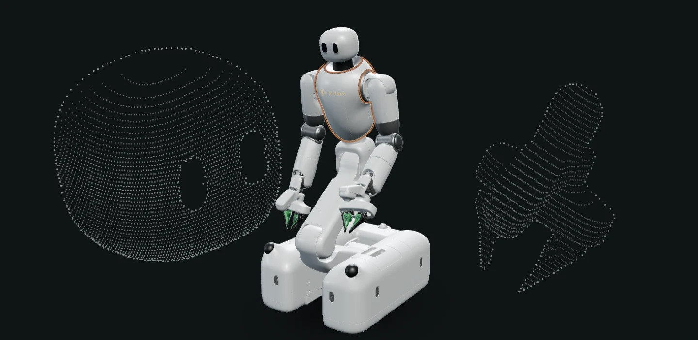

Run before you walk — Part 2
Dyna Taku
Choose a view to inspect the robot.



Supply chain
The map follows published industrial examples. Dyna’s public model identifies the robot geometry and leaves its complete supplier network undisclosed.
Documented relationshipProcess connection
Drag or use the arrow keys to rotate. Select a site or a line.
Manufacturing sequence
Scroll across to follow the branches.
Sources and coverage
Solid lines mark relationships a source identifies between companies, sites or products. Some sources name a manufacturer but leave its factory unspecified. Dashed lines show documented production steps and representative links between processes. Select a line to read its evidence and location notes.